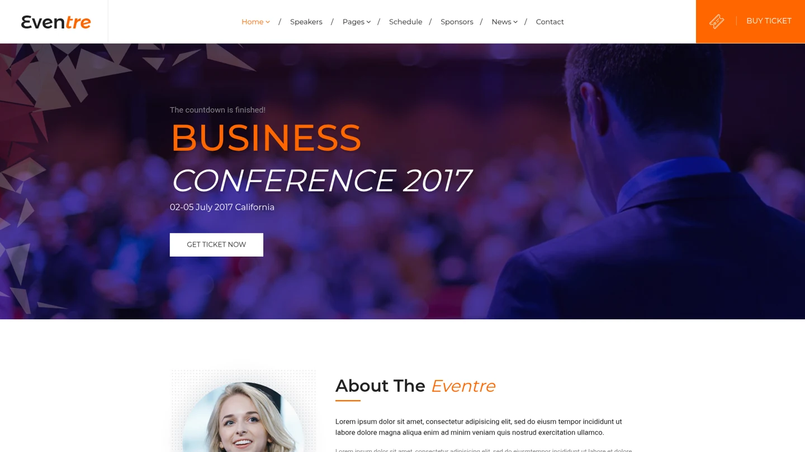
Reference A · Palette & atmosphere
eventre.
Reference screenshots retain the terms of their original sources. These selected frames were resized and encoded as WebP for the project website. The entries below preserve source information recorded in the released benchmark.

eventre.
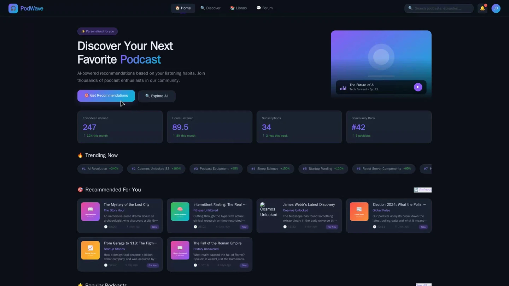
A synthetic reference webpage from the benchmark’s curated source pool.
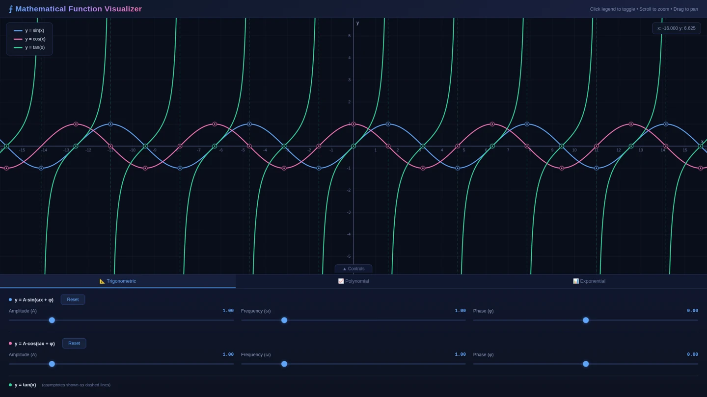
A synthetic reference webpage from the benchmark’s curated source pool.
Generated output: GPT-6 Astra · final artifact from a recorded OpenCode rerun. A replayed screenshot of the final artifact in the recorded air-quality case. This example is separate from the frozen leaderboard run.
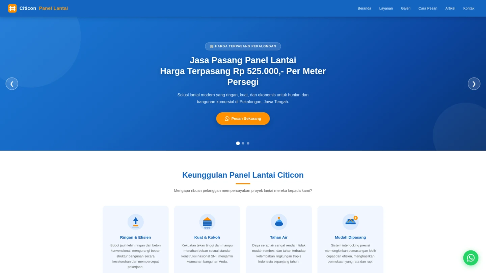
A synthetic reference webpage from the benchmark’s curated source pool.
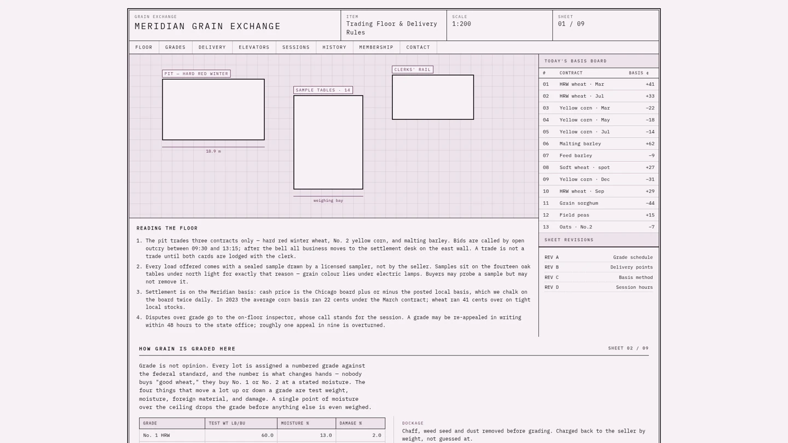
A synthetic reference webpage from the benchmark’s curated source pool.
Generated output: GPT-6 Astra · frozen final HTML, replayed locally. The generated page uses illustrative teaching data. The screenshot was replayed on 13 October 2026; the page’s clock and dates are dynamic.
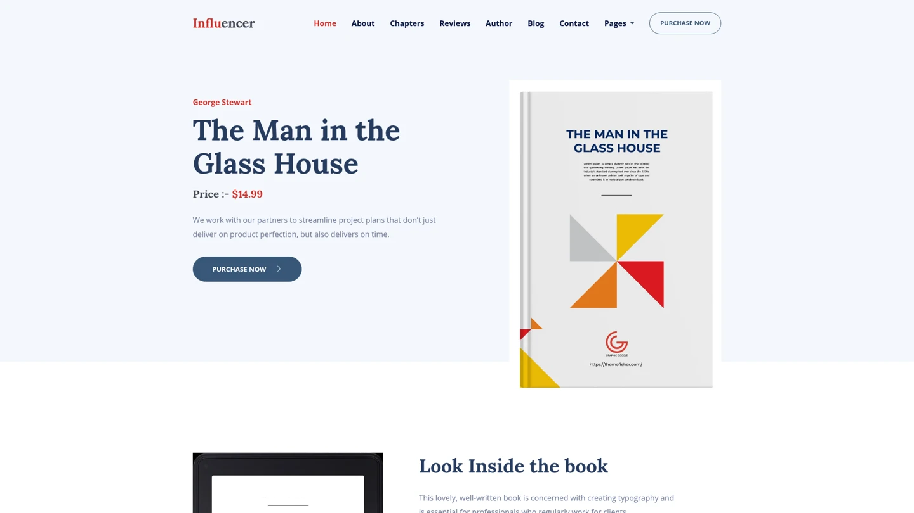
influencer · openly licensed template from the benchmark’s reference pool. Source terms are recorded in the structured attribution file below.
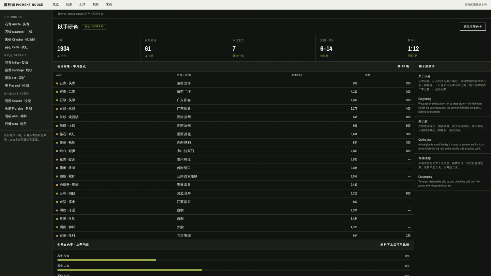
A synthetic reference webpage from the benchmark’s curated source pool.
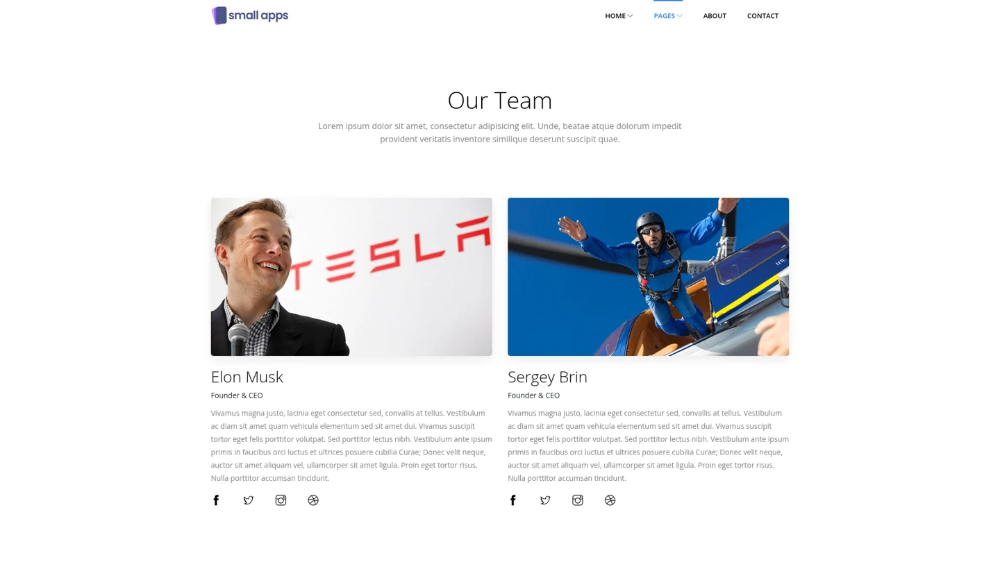
small-apps · openly licensed template from the benchmark’s reference pool. Source terms are recorded in the structured attribution file below. Requested departure, not a match.
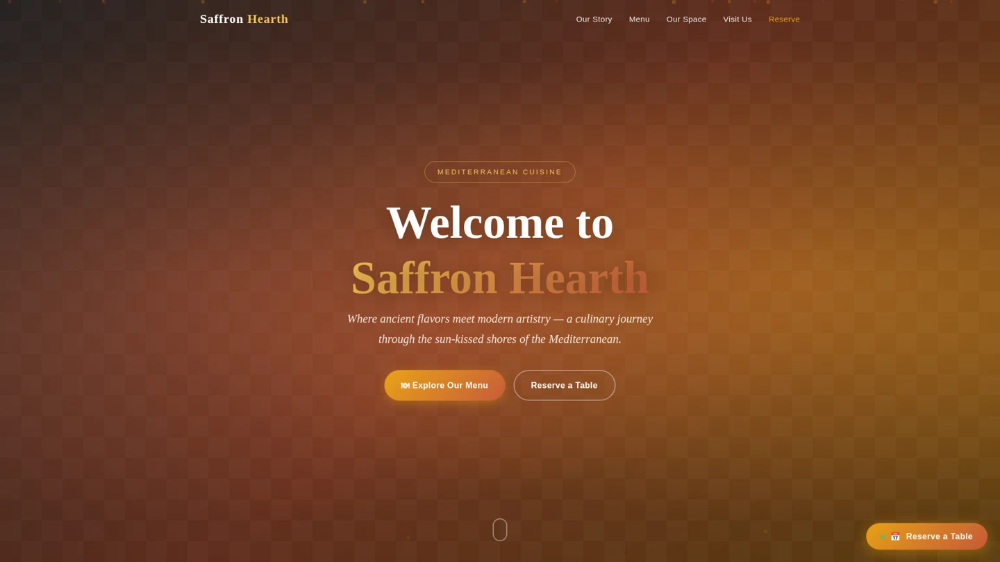
A synthetic reference webpage from the benchmark’s curated source pool.
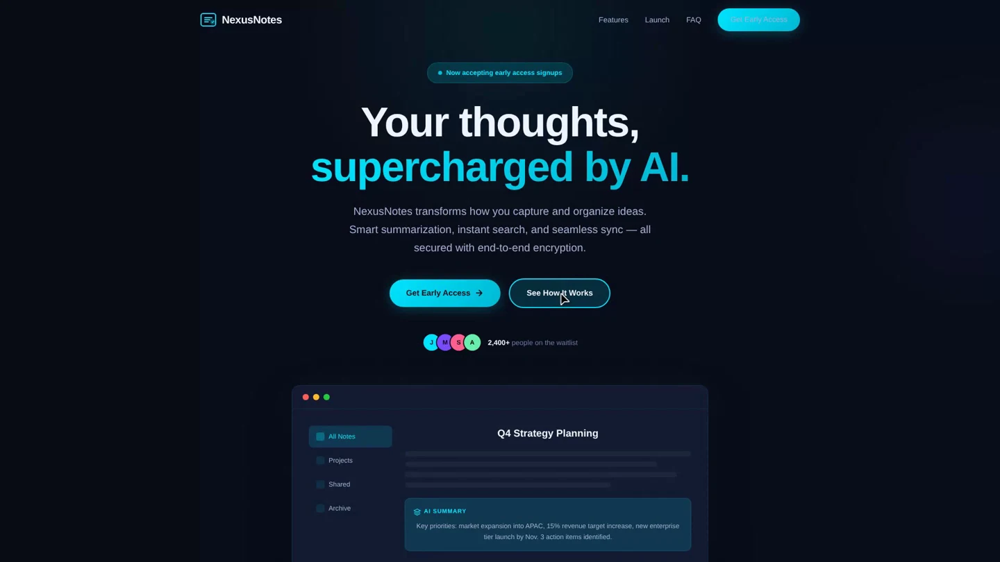
A synthetic reference webpage from the benchmark’s curated source pool. Requested departure, not a match.
Generated output: GPT-6 Astra · frozen benchmark final artifact Screenshot replayed from the unmodified, score-matched frozen HTML.
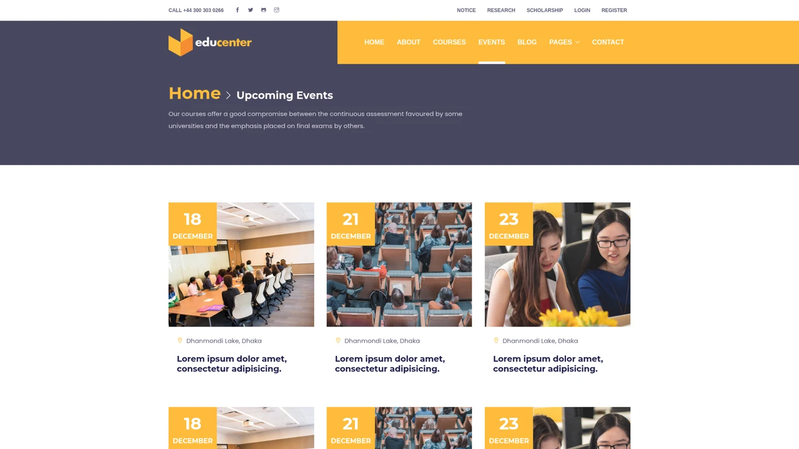
educenter · openly licensed template from the benchmark’s reference pool. Source terms are recorded in the structured attribution file below.
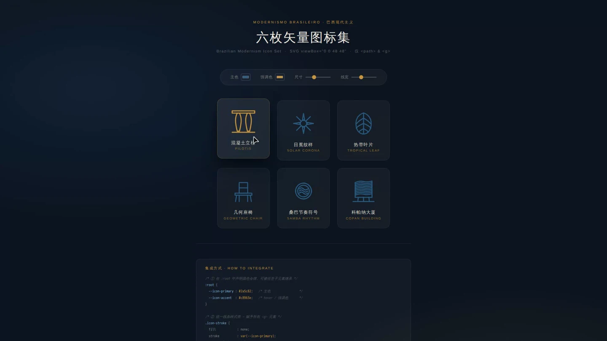
A synthetic reference webpage from the benchmark’s curated source pool.
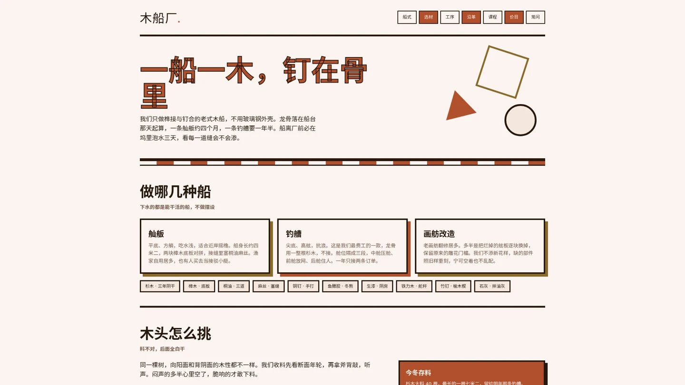
A synthetic reference webpage from the benchmark’s curated source pool.
Generated output: GPT-6 Astra · frozen benchmark final artifact Screenshot replayed from the unmodified, score-matched frozen HTML.
DM Sans, Manrope, and Space Mono are distributed under the SIL Open Font License. Local copies keep this website independent of external font services.
DM Sans license · Manrope license · Space Mono license
DejaVu Math TeX Gyre provides the local mathematical typesetting. DejaVu Math license
The website design and implementation are original. Paper content, example selection, and results follow the RefCraft manuscript and repository. Model names identify the evaluated systems.
The project mascot and scientific figure panels are extracted from the supplied RefCraft manuscript. The mascot retains its original transparency; paper figures retain their original colors, labels, and data.
The nine model marks shown in the leaderboard and the performance–token plot are rendered directly from Table 1 of the supplied RefCraft manuscript, at their original artwork and colors. Each mark’s page rectangle, extraction settings, and SHA-256 are recorded in data/model-marks.json; scripts/extract_model_marks.py reproduces them. The marks identify the evaluated systems and imply no endorsement by their owners.
Qwen · Official Qwen blog logo. The mark retains its original artwork and colors.
GitHub · Official GitHub Mark asset. The mark retains its original artwork and colors.
Hugging Face · Official Hugging Face organization avatar. The mark retains its original artwork and colors.